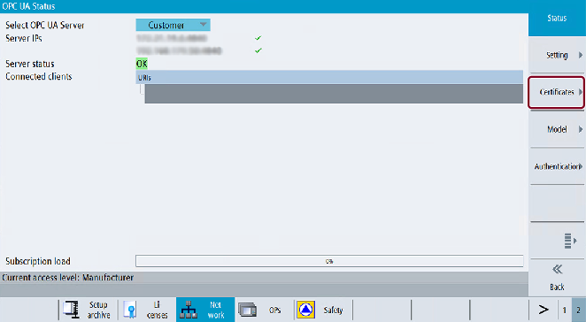

To establish a secure connection between an OPC UA server and a client it is necessary to exchange and trust the certificate of the other communication partner. The exchange is normally done automatically at the first connection attempt between client and server. Nevertheless, there is also the possibility to exchange the certificates manually before the other communication partner is available, e. g for preparing an easy commissioning.
For trusting the certificates there are two possibilities within the server:
Automatic trusting of new certificates
If "Accept certificates automatically" is activated in the commissioning dialog, new client certificates are trusted automatically and there is no manual interaction necessary to establish a secure connection.
This is the most comfortable option, but less secure than the manual trusting, since all certificates will be trusted.
Manual trusting of certificates (recommended)
If "Accept certificates automatically" is deactivated in the commissioning dialog the certificates must be trusted manually to establish a secure connection.
This allows the administrator of the OPC UA server to manually decide, which client can establish a secure connection to the OPC UA server
To have a comfortable way to handle certificates, the OPC UA dialog offers a certificate section, which can be found under the softkey "Certificates".
Softkey Certificates
The Certificate dialog allows the following operations:
Server certificate
Renewal of the server certificate
Export of the current server certificate
Client certificates
List of the current trusted certificates
List of the rejected client certificates
Manual import of a client certificate
Deletion of a client certificate
Trust a rejected client certificate